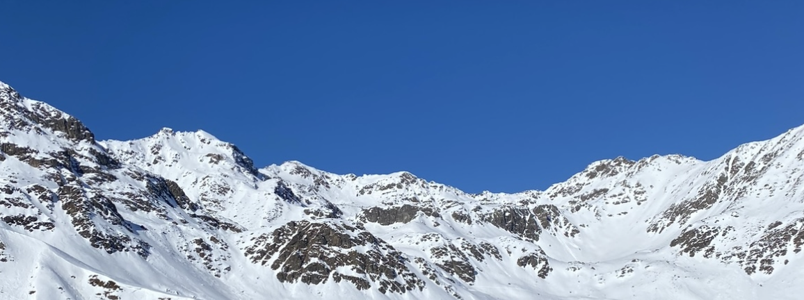

25/3/2024 af Frederik Daugaard
Top 5 Skisportssteder i Europa for studerende
Opdag Europas bedste skisportssteder, der tilbyder den perfekte kombination af fantastiske pister og livlige afterski-oplevelser, skræddersyet til den studerende livsstil!
Val Thorens, Frankrig: Europas højest beliggende skisportssted med sne hele sæsonen og et livligt afterski-miljø.
Mayrhofen, Østrig: Flot terræn og selvfølgelig en årlig Snowbombing Festival som tiltrækker folk i alle aldre.
Saalbach-Hinterglemm, Østrig: 270km pister og en legendarisk afterski-scene med fantastisk musik og festlig atmosfære.
Livigno, Italien: Gode priser, fantastiske skiløbsmuligheder samt duty-free shopping!
Pas de la Casa, Andorra: Overkommelige priser, mere end 200 km pister og livligt afterski-miljø med live musik og festlig atmosfære.
Er du på udkig efter sneklædte bjerge eller livlige afterski-oplevelser, har disse skisportssteder alt, hvad en studerende kunne ønske sig for den perfekte skiferieoplevelse. Så tag dine ski og festglade humør med og lav nogle uforglemmelige minder på pisten!